DexMimic: A Generalist Dexterous
Hand–Object Tracking Policy
via Value-Guided Reset Allocation
Key Insight
DexMimic shifts the focus from designing rewards to shaping the experience that drives policy learning.
Effective learning from large-scale human demonstrations depends on collecting useful interaction experience. DexMimic adapts the initialization distribution alongside policy learning, continually directing rollouts toward under-learned phases and starting states that support continued tracking.
Abstract
Achieving human-like dexterous manipulation remains a central challenge in robotics. Learning from human hand–object interaction (HOI) datasets offers a promising pathway to diverse dexterous skills, yet existing physics-based approaches train specialist policies for individual trajectories, thereby limiting skill reuse at scale. We introduce DexMimic, a generalist dexterous hand–object tracking policy jointly trained across diverse HOI trajectories. Efficient joint training requires allocating each rollout to both an undertrained phase and a starting state that supports continued tracking. DexMimic realizes this insight through Value-Guided Reset Allocation, which adapts the initialization distribution online to prioritize difficult phases and select reset states with higher expected tracking returns.
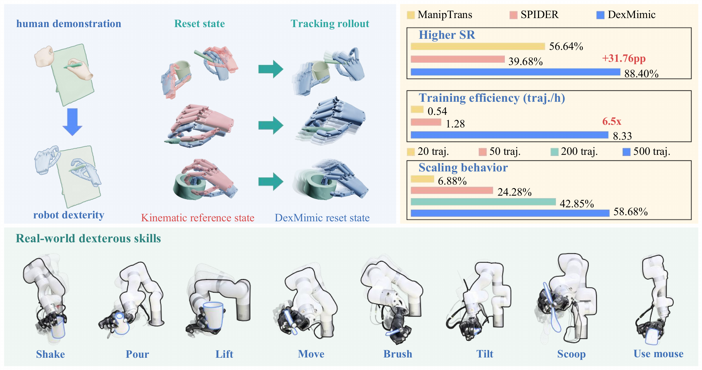
Method Overview
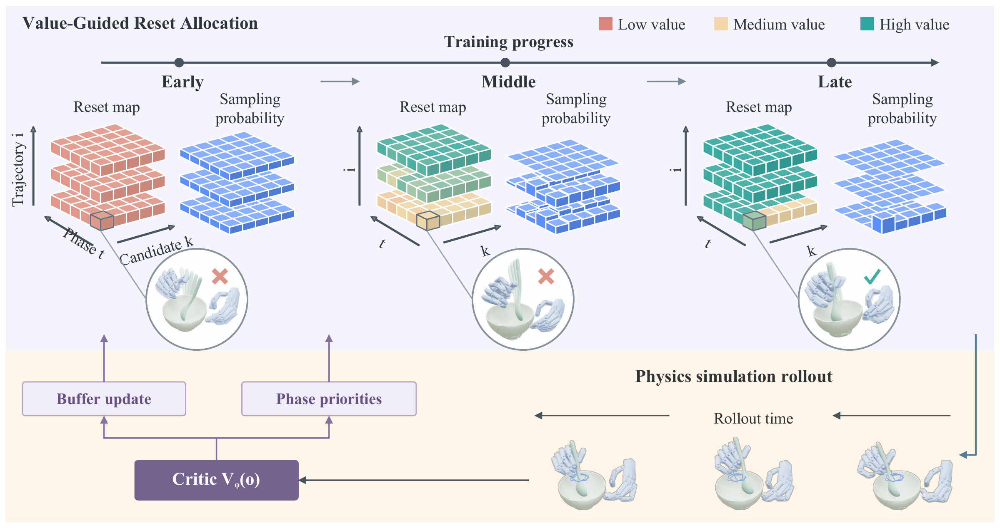
Simulation Visualization
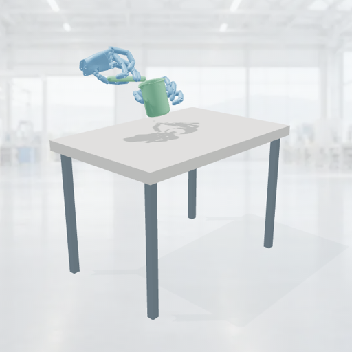
Pour into a Beaker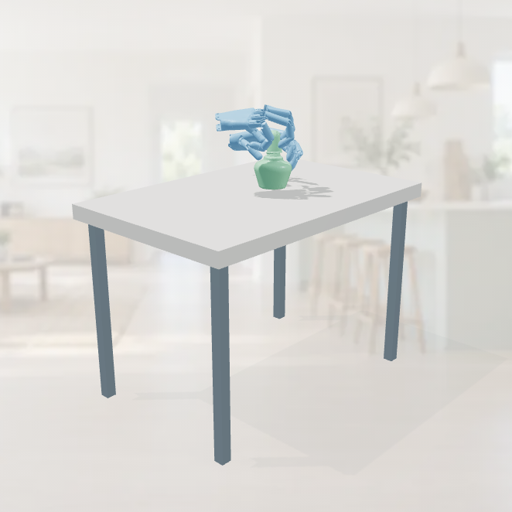
Lamp Extinguishing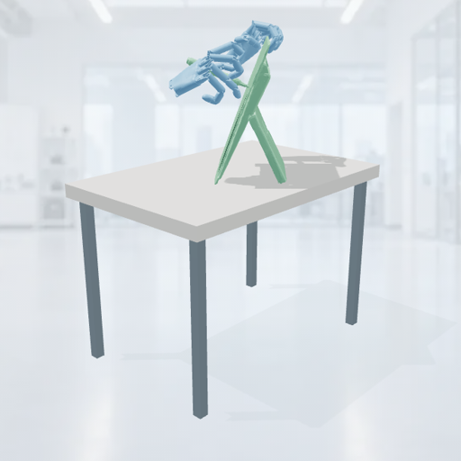
Whiteboard Writing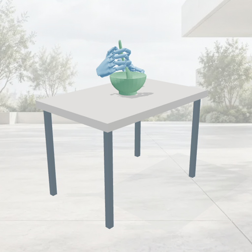
Stirring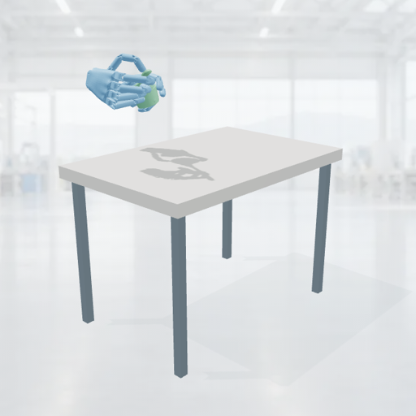
Scooping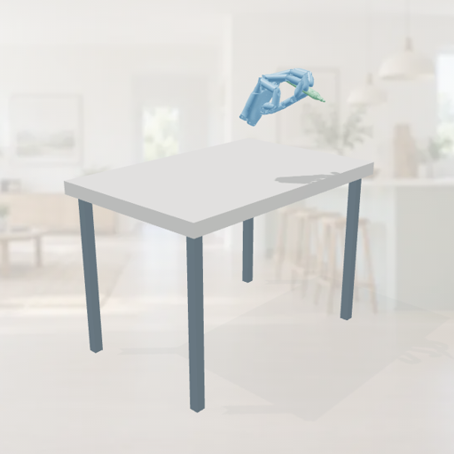
Writing on a Whiteboard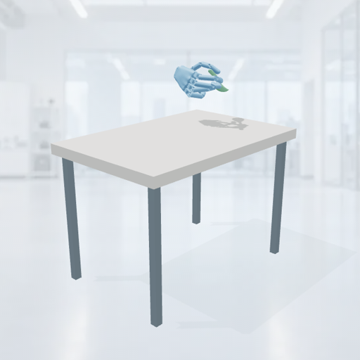
Scooping into a Bowl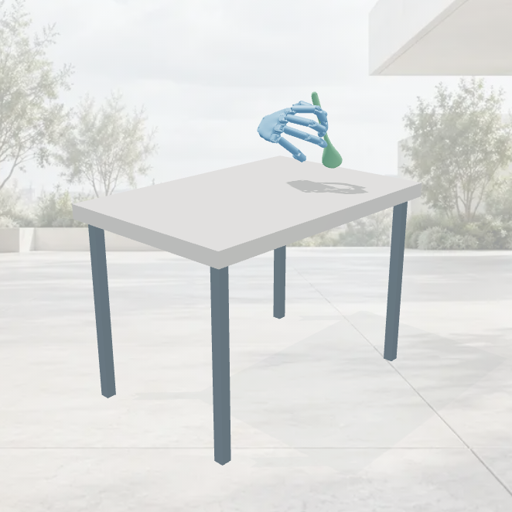
Spreading on Bread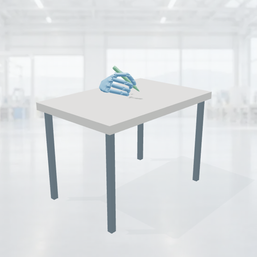
Writing on Paper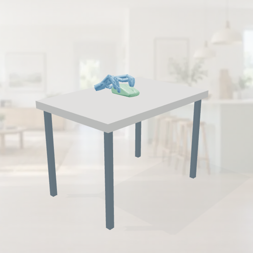
Using a Computer Mouse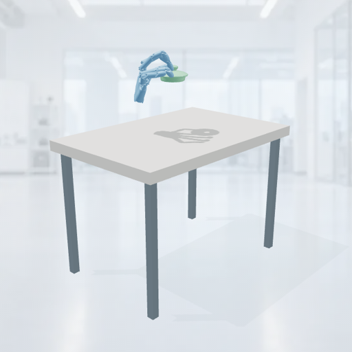
Uncapping a Teapot Shaking a Conical Flask
Shaking a Conical Flask
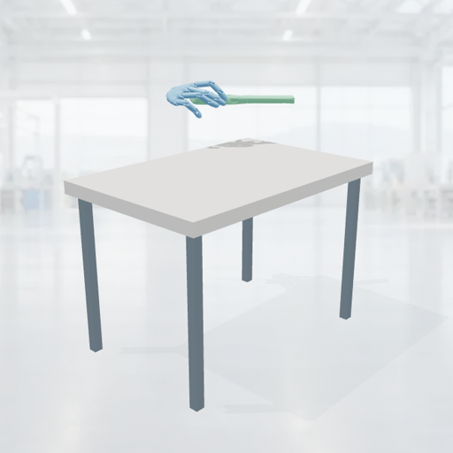
Lighting an Alcohol Lamp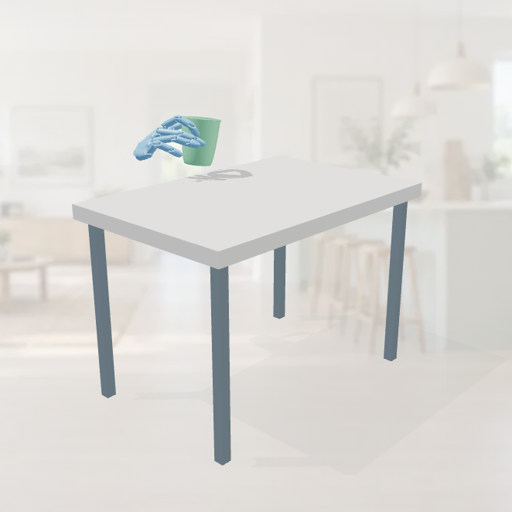
Moving a Blue Teacup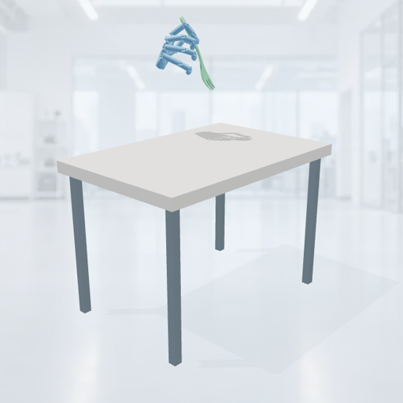
Taking Out a Fork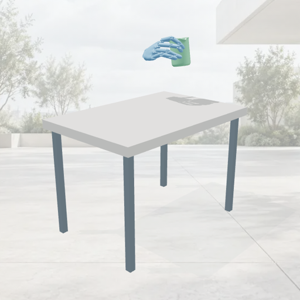
Heating a Beaker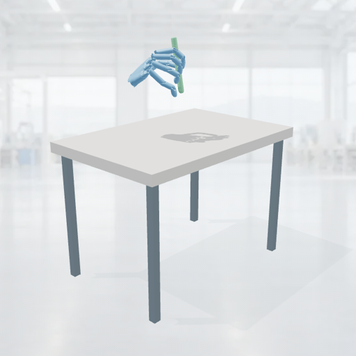
Shaking a Test Tube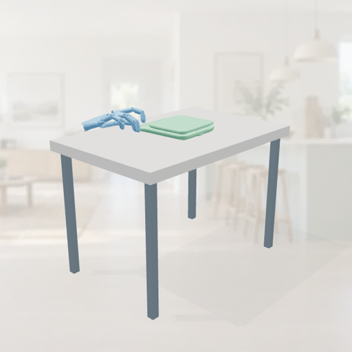
Pressing a Scale Button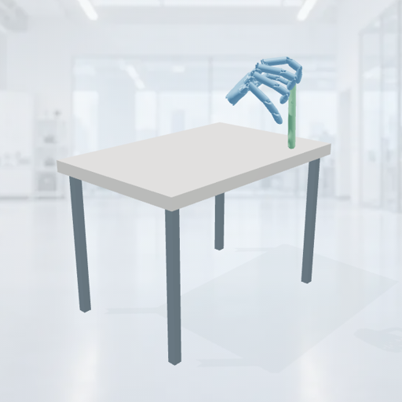
Racking a Tube with a Holder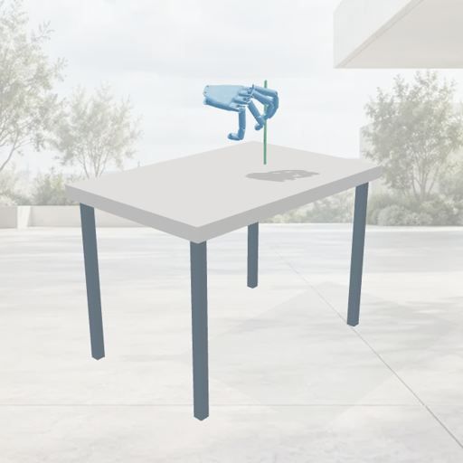
Racking a Glass Rod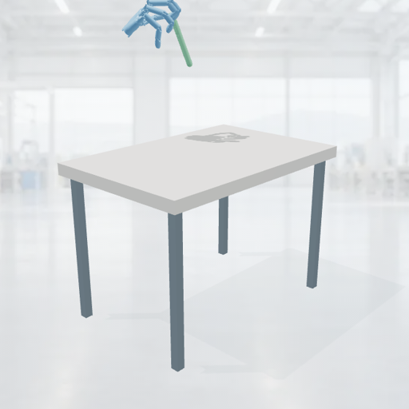
Removing a Test Tube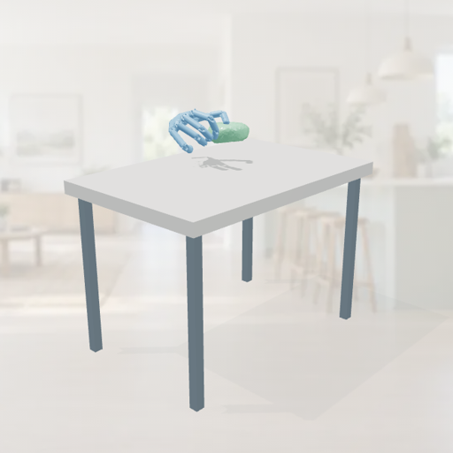
Placing a Donut on a Saucer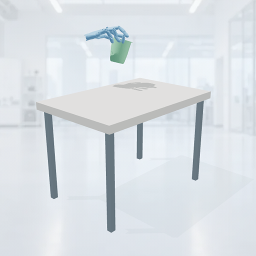
Placing a Cup on a Scale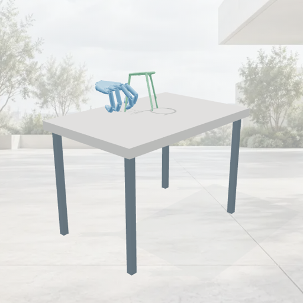
Moving a Tripod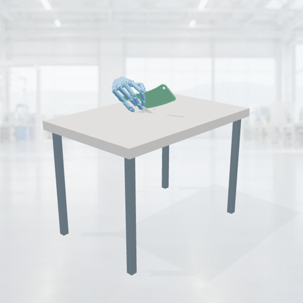
Holding a Kitchen Knife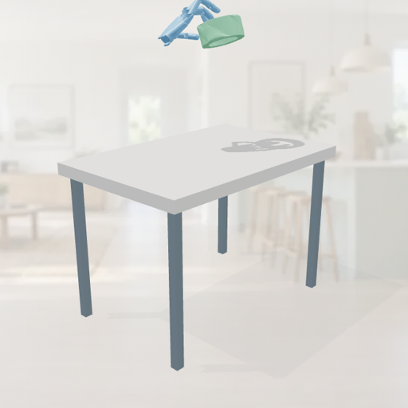
Putting Tape in a Box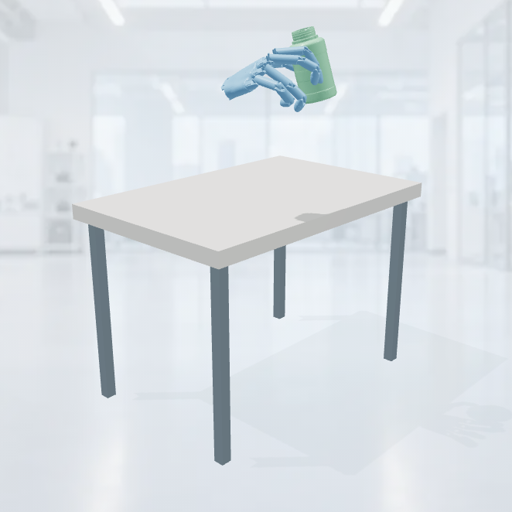
Moving a Striped Bottle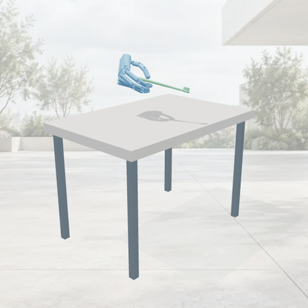
Moving a Toothbrush